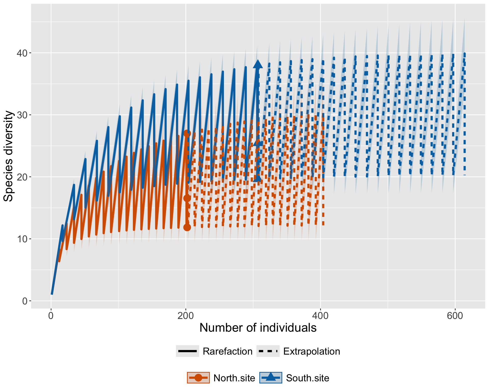

Chapter 19 Generalized Linear Models
A Generalized Linear Model (GLM) is an flexible statistical framework that allows us to model relationships between variables when the assumptions of ordinary linear regression are not met. Generalized Linear Models makes linear regression generalizable by using a link function to relate the linear model (i.e., relationship between x and y; systematic component) to the error (random component), allowing the magnitude of the variance for each measurement to be a function of the mean value and allowing us to specify different types of error distributions. Practically, GLMs allow you to analyze a variety of regression models, including linear regression, ANOVA, models for examining count data, models for predicting likelihood of events, under one statistical umbrella.
Model assumptions
What are the assumptions of GLMs?
- The data are independent. No problem - this is always important!
- The residuals do NOT need to be normally distributed, but you do need to specify a distribution from an exponential family that best fits your data (i.e., normal/Gaussian, binomial, Poisson, etc.)
- The homogeneity of variance does NOT need to be satisfied.
Wow! This is great - let’s go over the components of GLMs - like what is this “link” function that everyone is talking about?
A little aside Don’t confused Generalized linear models with General linear models. The term “general” linear model (GLM) usually refers to a linear regression models that assumes a Gaussian (normal) distribution, while generalized linear models allow you to specify other distribution from the exponential family (a set of distributions which include normal, Poisson, gamma and other commonly used distributions) for residuals. Parameter estimation uses maximum likelihood estimation (MLE) rather than ordinary least squares (OLS).
Remember from our previous discussion of linear regression, that we determine the line of best fit for our data points by using ordinary least squares.
Maximum likelihood estimation is
Components of the GLM
- The linear predictor: This is the function that describes the relationship between the independent variable/s and the dependent variable. This essentially has the same structure as a linear model:
\(\eta_{i}\) = \(\beta_{0}\) + \(\beta_{1}X_{i1}\) + … \(\beta_{p}X_{ip}\)
Where \(\eta_{i}\) is the equivalent of y; the linear predictor - the predicted point on the y-axis according to the coefficients of predictors in combination with . \(\beta\) values indicate coefficients of the predictors and x values indicate values of the predictors.
The error or random component.
The link function which brings together the linear predictor and the error distribution.
How do link functions work?
Let’s start with the formula for a line.
\(y =\beta_{0} + \beta_{1}*x\) where y is the y-value (point along the y-axis); x is the value along the x-axis; \(\beta_{1}\) (aka m) is the slope, or how much the line rises for 1 unit increase in x; \(\beta_{0}\) is the intercept, or the value of y, when x = 0.
In GLMs, the y term is \(\eta_{i}\), so:
\(\eta_{i}\) = \(\beta_{0}\) + \(\beta_{1}X_{i1}\) + … \(\beta_{p}X_{ip}\)
You can keep adding predictor variables (i.e., explanatory variables, independent variables) to the model as \(\beta_{2}\) and so on! You can also specify non-linear relationships, like polynomial relationships, by including the second order term \(\beta_{2}X_{i2}^2\) like so:
\(\eta_{i}\) = \(\beta_{0}\) + \(\beta_{1}X_{i1}\) + \(\beta_{2}X_{i2}^2\)
For our classic regression models, you obtain an equation for the line of best fit presented in the syntax above. These classic linear regression models make several important assumptions: Additive relationships: Model variables have an additive relationship with each other, rather than multiplicative. Homoskedastic data: Constant variance, in order words, variance does not increase or decrease as a function of the mean. Normally distributed errors (residuals): Residuals are normally distributed, with mean 0 Non-correlated variables: Variables are independent.
In standard linear model analysis, we use transformations to meet these assumptions, but GLMs are really cool, because we can avoid using transformation, by applying the link function. Through the beauty of link functions and conditional probabilities, we do not need to worry about homoskedasticity, normal distribution of residuals, or additive relations.
19.1 Link functions
Let’s talk link functions, as this is what modifies our regression models, depending on the error distribution of our response variable. You specify the link function based on error distribution of your response variables, let’s go over the most common functions. Keep in mind that statisticians have developed many, many distributions! Some interesting ones include Pareto distribution, often applied to model Gross Domestic Product, and the von Mises distribution, for circular data, applied to days of the year! We will go over the most common link functions and their formulas used in the ecological sciences.
Error distribution = Gaussian or Normal Link name = Identity This is the generalized linear model corresponding to a Gaussian distribution, in other words, regression/ANOVA. We do not need to transform the data in anyway, so the link is called identity. Link function = Revisiting the standard equation for a line, \(y =\beta_{0} + \beta_{1}*x\), we are saying that the mean y value will be what is calculated by the predicted model; we are not transforming anything. This is sometimes indicated with the following equation: \(g(\pi)=\pi\) where g indicates the link function, and \(\pi\) indicates the mean y.
Error distribution = Binomial Link name = Logit Link function = \(g(\pi_i)=ln(\frac{\pi_i}{1-\pi_i})\) This function can be rewritten to solve for y, as: \(\pi_i=ln(\frac{e^{\pi_i\beta}}{1+e^{\pi_i\beta}})\) Why would you want to do this? Back in the day, I used this function to create the line of best fit for logistic regressions! See excel example from my very first publication ever!
Error distribution = Poisson Count data cannot be less than 0, so we use the Poisson distribution, so we transform the y variable by taking the natural log. Link name = Log Link function = \(g(\pi_i)=ln(\pi_i)\) This function can be rewritten to solve for y, as: \(\pi_i=e^{\pi_i\beta}\)
Error distribution = Gamma Used for data that are continuous and positive but may have skewed distributions. Often uses for lengths, durations or amounts (i.e., time to death). Link name = Reciprocal Link function = \(g(\pi_i)=1/pi_i)\) This function can be rewritten to solve for y, as:
19.2 GLMs in R
Let’s generate some code for statistical analysis, and create some figures!
First, we will start by examining data with a Gaussian/normal distribution.
data(iris)
#Is petal width related to petal length?
#model <- glm(y-value ~ x-values, family = specifylinkingfunctions, data = dataset)
iris_model <- glm(Petal.Length ~ Petal.Width, family = gaussian(), data = iris) #y data is continuous, use gaussian
summary(iris_model)##
## Call:
## glm(formula = Petal.Length ~ Petal.Width, family = gaussian(),
## data = iris)
##
## Coefficients:
## Estimate Std. Error t value Pr(>|t|)
## (Intercept) 1.08356 0.07297 14.85 <2e-16 ***
## Petal.Width 2.22994 0.05140 43.39 <2e-16 ***
## ---
## Signif. codes: 0 '***' 0.001 '**' 0.01 '*' 0.05 '.' 0.1 ' ' 1
##
## (Dispersion parameter for gaussian family taken to be 0.2286808)
##
## Null deviance: 464.325 on 149 degrees of freedom
## Residual deviance: 33.845 on 148 degrees of freedom
## AIC: 208.35
##
## Number of Fisher Scoring iterations: 2#for comparison run a linear regression for comparison
iris_modelR <- lm(Petal.Length ~ Petal.Width, data = iris) #y data is continuous, use gaussian
summary(iris_modelR)##
## Call:
## lm(formula = Petal.Length ~ Petal.Width, data = iris)
##
## Residuals:
## Min 1Q Median 3Q Max
## -1.33542 -0.30347 -0.02955 0.25776 1.39453
##
## Coefficients:
## Estimate Std. Error t value Pr(>|t|)
## (Intercept) 1.08356 0.07297 14.85 <2e-16 ***
## Petal.Width 2.22994 0.05140 43.39 <2e-16 ***
## ---
## Signif. codes: 0 '***' 0.001 '**' 0.01 '*' 0.05 '.' 0.1 ' ' 1
##
## Residual standard error: 0.4782 on 148 degrees of freedom
## Multiple R-squared: 0.9271, Adjusted R-squared: 0.9266
## F-statistic: 1882 on 1 and 148 DF, p-value: < 2.2e-16When we call the summary, you can see several interesting things. First, the first species alphabetically is represented by the intercept - essentially each species is compared against this first species. Then, you see the dispersion parameter (smaller the better), and AIC for model comparison (smaller the better). The dispersion parameter is a measure of variance - how the actual data points scatter around a mean, similar to the sum of squares in a linear regression. The AIC or the Akaike Information Criterion is usually calculated for model comparison. Here, it is presented as a general assessment of goodness of fit.
AIC = 2K – 2ln(L) where: K: The number of model parameters. ln(L): The log-likelihood of the model. This tells us how likely the model is, given the data.
Let’s take a direct look at the results of a statistical test using the Anova function in the ‘car’ package.
library(car)
#glm
#iris_model <- glm(Petal.Length ~ Petal.Width, family = gaussian(), data = iris) #y data is continuous, use gaussian
Anova(iris_model)## Analysis of Deviance Table (Type II tests)
##
## Response: Petal.Length
## LR Chisq Df Pr(>Chisq)
## Petal.Width 1882.5 1 < 2.2e-16 ***
## ---
## Signif. codes: 0 '***' 0.001 '**' 0.01 '*' 0.05 '.' 0.1 ' ' 1#for comparison run a linear regression for comparison
#iris_modelR <- lm(Petal.Length ~ Petal.Width, data = iris) #y data is continuous, use gaussian
Anova(iris_modelR)## Anova Table (Type II tests)
##
## Response: Petal.Length
## Sum Sq Df F value Pr(>F)
## Petal.Width 430.48 1 1882.5 < 2.2e-16 ***
## Residuals 33.84 148
## ---
## Signif. codes: 0 '***' 0.001 '**' 0.01 '*' 0.05 '.' 0.1 ' ' 1#Look at residuals
res_irismodel <- rstandard(iris_model)
plot(iris_model$fitted.values, res_irismodel, pch=20, ylab = "Standarized residuals", xlab = "fitted values") The residuals should have a random pattern, yet here we see a distinctive shape in which they increase at mid-size values and decrease, particularly at the largest values. We could try a different error distribution.
The residuals should have a random pattern, yet here we see a distinctive shape in which they increase at mid-size values and decrease, particularly at the largest values. We could try a different error distribution.
iris_model <- glm(Petal.Length ~ Petal.Width, family = Gamma (), data = iris) #y data is continuous, use gaussian
summary(iris_model)##
## Call:
## glm(formula = Petal.Length ~ Petal.Width, family = Gamma(), data = iris)
##
## Coefficients:
## Estimate Std. Error t value Pr(>|t|)
## (Intercept) 0.532340 0.017386 30.62 <2e-16 ***
## Petal.Width -0.172682 0.008915 -19.37 <2e-16 ***
## ---
## Signif. codes: 0 '***' 0.001 '**' 0.01 '*' 0.05 '.' 0.1 ' ' 1
##
## (Dispersion parameter for Gamma family taken to be 0.08000084)
##
## Null deviance: 44.655 on 149 degrees of freedom
## Residual deviance: 12.444 on 148 degrees of freedom
## AIC: 412.86
##
## Number of Fisher Scoring iterations: 5res_irismodel <- rstandard(iris_model)
plot(iris_model$fitted.values, res_irismodel, pch=20, ylab = "Standarized residuals", xlab = "fitted values")
iris_model <- glm(Petal.Length ~ Petal.Width, family = gaussian (link="log"), data = iris) #y data is continuous, use gaussian
summary(iris_model)##
## Call:
## glm(formula = Petal.Length ~ Petal.Width, family = gaussian(link = "log"),
## data = iris)
##
## Coefficients:
## Estimate Std. Error t value Pr(>|t|)
## (Intercept) 0.59485 0.04195 14.18 <2e-16 ***
## Petal.Width 0.54740 0.02283 23.98 <2e-16 ***
## ---
## Signif. codes: 0 '***' 0.001 '**' 0.01 '*' 0.05 '.' 0.1 ' ' 1
##
## (Dispersion parameter for gaussian family taken to be 0.4808902)
##
## Null deviance: 464.325 on 149 degrees of freedom
## Residual deviance: 71.172 on 148 degrees of freedom
## AIC: 319.85
##
## Number of Fisher Scoring iterations: 7res_irismodel <- rstandard(iris_model)
plot(iris_model$fitted.values, res_irismodel, pch=20, ylab = "Standarized residuals", xlab = "fitted values")
iris_model <- glm(Petal.Length ~ Petal.Width, family = gaussian (link=power(0.25)), data = iris) #y data is continuous, use gaussian
summary(iris_model)##
## Call:
## glm(formula = Petal.Length ~ Petal.Width, family = gaussian(link = power(0.25)),
## data = iris)
##
## Coefficients:
## Estimate Std. Error t value Pr(>|t|)
## (Intercept) 1.133377 0.012699 89.25 <2e-16 ***
## Petal.Width 0.198171 0.007213 27.47 <2e-16 ***
## ---
## Signif. codes: 0 '***' 0.001 '**' 0.01 '*' 0.05 '.' 0.1 ' ' 1
##
## (Dispersion parameter for gaussian family taken to be 0.4035011)
##
## Null deviance: 464.325 on 149 degrees of freedom
## Residual deviance: 59.718 on 148 degrees of freedom
## AIC: 293.53
##
## Number of Fisher Scoring iterations: 6res_irismodel <- rstandard(iris_model)
plot(iris_model$fitted.values, res_irismodel, pch=20, ylab = "Standarized residuals", xlab = "fitted values") All of this to point out that you can in essence perform transformations within the link and you can use the AIC values to compare different models and select the best one for your data (lowest AIC value). In the end, our first model was the best fit to our data, though it wasn’t perfect.
All of this to point out that you can in essence perform transformations within the link and you can use the AIC values to compare different models and select the best one for your data (lowest AIC value). In the end, our first model was the best fit to our data, though it wasn’t perfect.
Over Dispersion is measured by comparing variance of the response variable to the variance of the linear predictors, when the variance of the response variable is larger than that of the linear predictor, we have overdispersion, meaning those data are more weidley spread than the explanatory variables, and indicates that additional covariates need to be identified.
At this time, let’s assume that we don’t have additional variables to add to our GLM model. Let’s run this and generate a nice plot!
If you want to make predictions: add this info if you want to helpful summary page 507.